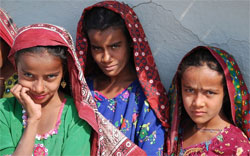
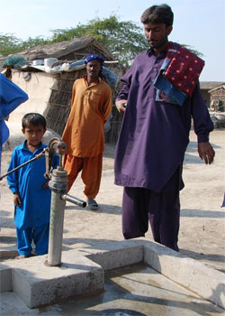
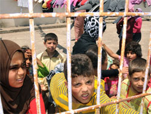
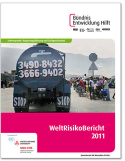

|
Pakistan: Zwei Jahre nach der Flut |
|  |
Chancen für Mädchen: terre des hommes unterstützt den Wiederaufbau in Pakistan - © C. Hartmann/terre des hommes |
Im Jahr 2010 wurde Pakistan von einer verheerenden Flutkatastrophe heimgesucht. Etwa 20 Millionen Menschen waren betroffen; viele verloren ihr Leben, ganze Dörfer und Ernten wurden vernichtet. Die Schäden wurden auf zehn Milliarden US-Dollar geschätzt. Die pakistanische Regierung ließ keine große Bereitschaft erkennen, den Opfern schnell und umfassend zu helfen. Als im Jahr darauf erneut die Flüsse über die Ufer traten, waren erneut etwa neun Millionen Menschen betroffen. Darunter waren viele, die bereits unter der Flutkatastrophe zu leiden hatten. Auch heute, zwei Jahre nach der Flut, sind die Folgen der Flut noch immer spürbar. Die Überlebenden fühlen sich von der pakistanischen Regierung in Stich gelassen.
Noch immer leben viele der Flutopfer in den Auffanglagern an den Stadträndern von Karachi oder Hyderabad, in die sie vor den Wassermassen evakuiert worden waren. In den Lagern haben sich die Behörden weder um Schulen noch um ärztliche Versorgung gekümmert, es gibt keine Wasserversorgung oder Kanalisation. Dazu müssen die Menschen mit der ständigen Unsicherheit leben, erneut vertrieben zu werden: Wenn Bauunternehmen Interesse an dem Land haben, können diese von einem Tag auf den anderen geräumt werden. Zwar hatte die Regierung versprochen, dass Flutopfer auf Wunsch Baugrund in Karachi zugewiesen bekommen könnten, doch dieses Versprechen wurde nicht eingehalten.
Zwangsarbeiterähnliche Bedingungen
Um sich und ihre Familien über die Runden zu bringen, arbeiten die meisten Männer als Tagelöhner in Fabriken oder auf Baustellen. Die wenigsten wollen zurück in ihre Dörfer. Dort erwartet sie ein Leben in zwangsarbeiterähnlichen Bedingungen, abhängig von der Gunst eines Großgrundbesitzers, so Karamt Ali, der Leiter der pakistanischen terre des hommes-Partnerorganisation PILER. Die Kleinbauern nehmen üblicherweise einen Kredit beim Landbesitzer auf und zahlen ihn nach der Ernte zurück. Die meisten verloren ihre Ernte durch die Flut, doch die Großgrundbesitzer fordern weiterhin die Kredite zurück, oder sie sollen durch Arbeit abgegolten werden. Der pakistanische Staat hat auf Druck der einflussreichen Großgrundbesitzer bisher keine Regelung gesucht, um einen Ausgleich zu schaffen.
Stattdessen hat die pakistanische Regierung den Empfängerkreis der Hilfsgelder stark reduziert. So wurde beschlossen, lediglich den Familien finanziell unter die Arme zu greifen, deren Haus durch die Fluten beschädigt worden war. Familien, die nur ihre Ernte verloren hatten, blieben außen vor. Zudem musste man offiziell als Familienoberhaupt registriert sein, um Hilfe zu beantragen. Durch diese Regelung blieb vielen Frauen der Zugang zu Hilfsgeldern verwehrt. Auch wurden ganze Bevölkerungsgruppen bei der Vergabe der Hilfszahlungen diskriminiert. Beispielsweise erhielt die hinduistische Volksgruppe der Dalit keine finanziellen Hilfen.
|  |
Wiederaufbau: terre des hommes hat sich in zerstörten Dörfern um die Wasserversorgung gekümmert - © C. Hartmann/terre des hommes |
Wiederaufbau von Schulen
Die Flutkatastrophen von 2010 und 2011 trafen vor allem die arme, strukturell benachteiligte Landbevölkerung. "Diese Menschen hatten schon vorher kaum eine Chance auf Bildung oder angemessene medizinische Versorgung", erklärt Projektpartner Karamt Ali. Durch die ausbleibenden Hilfen zementiert die pakistanische Regierung diese Situation für Jahrzehnte. Schätzungsweise 10.000 Schulen wurden 2010 von der Flut zerstört. Auch nach zwei Jahren sind die meisten nicht wieder aufgebaut. Lediglich dort, wo Hilfsorganisationen tätig waren, wurden Schulen gebaut. terre des hommes hat in seinem Wiederaufbauprogramm den Bau und Instandsetzung von insgesamt 44 Schulen finanziert.
Auch nach zwei Jahren ist seitens der pakistanischen Regierung noch viel zu tun. Aufgrund der Klimawandels hat sich der Monsun-Regen verändert und bedroht praktisch alle Regionen des Landes mit Überflutungen. Doch die Regierung konzentriert ihre Ausgaben nach wie vor auf dem Verteidigungsetat, statt in Entwicklung zu investieren. Auch die Raten für die Tilgung der Schulden des pakistanischen Staates sind immens hoch. Daher fordern die terre des hommes-Partner in einem gemeinsamen Dokument einen neuen Gesellschaftsvertrag, der den Staat in die Pflicht nimmt, seinen Bürgern die verfassungsgemäße Grundversorgung zu sichern. Ebenso fordern sie eine Landreform, eine Verbesserung der Gleichberechtigung zwischen Frau und Mann, dass die Rechte von Kindern und ethnischen Minderheiten geachtet werden. Und vor allem, dass ein effektives Katastrophenmanagements konsequent Umgesetzt wird.
Die terre des hommes-Projektarbeit in Pakistan
terre des hommes ist seit 2010 in Pakistan tätig. Umgesetzt werden 27 Projekte mit einem Gesamtvolumen von 3,1 Millionen Euro. Bislang wurden mit den Maßnahmen etwa 25.000 Menschen erreicht. Zunächst war es vor allem Nothilfe, die geleistet wurde: Lebensmittel wurden verteilt und medizinische Versorgung geleistet. Anschließend wurde mit dem Wiederaufbau begonnen. Häuser und Schulen werden gebaut, und die Menschen werden dabei unterstützt, sich ein Einkommen zu sichern. Ein Schwerpunkt ist die Förderung von Mädchen und Frauen. Weiterlesen
|
Syrien: Über eine Million Flüchtlinge
Bündnis-Mitglieder Misereor und medico international helfen Opfern des Bürgerkriegs |
Die humanitäre Situation in Syrien spitzt sich dramatisch zu: Sowohl die Lage der Binnenflüchtlinge, die aus den umkämpften Städten wie Aleppo, Hama oder Homs in andere Städte in Syrien fliehen als auch der Menschen, die über die Grenzen nach Jordanien, in den Libanon oder in die Türkei schaffen, ist katastrophal. Über eine Million Menschen sind auf der Flucht, nach UN-Angaben allein 200.000 aus Aleppo in den letzten 48 Stunden. Und die Situation wird immer dramatischer. Die Bündnis-Mitglieder Misereor und medico international helfen den Menschen, die unter dem Bürgerkrieg leiden, und bitten um Spenden.
Der langjährige Misereor-Partner JRS („Jesuit Refugee Service“), der bisher schon irakische Flüchtlinge in Syrien und Jordanien unterstützt, steht seit Monaten auch Syrern zur Seite, die zu Vertriebenen im eigenen Land oder zu Flüchtlingen in die Nachbarländern wurden. „Wir versuchen, erste Hilfe zu leisten, verteilen Kochutensilien, Matratzen, Lebensmittel, helfen bei der Suche nach Unterkünften und Wohnungen“, berichtet Pater Nawras Sammour, Jesuit und JRS-Regionaldirektor. Auch im Libanon und in Jordanien ist JRS aktiv und wird die Hilfen für die täglich neuen Flüchtlingsströme ausweiten. Misereor stellt seinen Partnern in Syrien, Jordanien und im Libanon 480.000 Euro zur Verfügung.
medico international unterstützt seit Beginn des Aufstands lokale Bürgerkomitees, vorwiegend junge Aktivistinnen und Aktivisten, in ihrem mutigen Einsatz für Freiheitsrechte und ein Leben ohne Angst und Despotie. Sie leisten unmittelbare Nothilfe für die ausgebombten und vertriebenen Bewohner aus zerstörten Dörfern oder umkämpften Stadtvierteln, schützen verfolgte Oppositionelle und versorgen durch ein Ärztenetzwerk in geheimen Notkliniken die Verletzten und Verwundeten, die in den staatlichen Krankenhäusern vom Zugriff der Sicherheitskräfte und damit von Folter und Tod bedroht wären. Im Nachbarland Libanon hilft der medico-Partner AMEL, eine säkulare libanesische Hilfsorganisation, Flüchtlingsfamilien aus Syrien.
Weitere Informationen:
terre des hommes ist Mitglied im "Bündnis Entwicklung Hilft", einem Zusammenschluss deutscher Hilfswerke für akute Nothilfe und langfristige Entwicklungszusammenarbeit. |
Nachruf auf Milo Roten
terre des hommes trauert um Milo Roten |
Mit Trauer und Bestürzung haben wir erfahren, dass am 25. Juli in Wien unser langjähriger Kollege, Mitarbeiter und Freund Milo Roten völlig überraschend an einer Lungenembolie verstorben ist. Er wurde 77 Jahre alt.
Milo Roten war gebürtiger Schweizer und arbeitete von 1970 bis 1995 für terre des hommes Deutschland e.V. Ab 1970 baute er das pädagogische Zentrum in Bad Oeynhausen auf, dort wurden die schwerverletzten vietnamesischen Jugendlichen betreut, die terre des hommes damals mit der Aktion »Schöne Wolke« zur Rehabilitation nach Deutschland geholt hatte.
Nach der Wiedervereinigung Vietnams im Jahr 1975 übernahm er die terre des hommes-Projektarbeit in Vietnam, eine Aufgabe, die er bis zu seinem Ruhestand im Jahr 1995 mit großem Enthusiasmus wahrgenommen hat. Auch danach blieb er dem südostasiatischen Land, seinen Menschen und vor allem den Kindern auf besondere Weise verbunden und hatte zahlreiche Freunde dort. Die Nachricht von seinem Tod hat auch in Vietnam große Bestürzung ausgelöst.
Milo Roten wünschte sich, dass seine Asche im Mekong Delta verstreut wird.
Wir sind sehr traurig.
Präsidium, Vorstand, Mitglieder und Mitarbeiter von terre des hommes Deutschland e. V. |
Katastrophen: Zerstörte Umwelt - höheres Risiko?
Bündnis Entwicklung Hilft präsentiert WeltRisikoBericht 2012 |
Wenn Korallenriffe zerstört, Mangrovenwälder abgeholzt und Flussläufe begradigt werden, ist nicht allein das jeweilige Ökosystem gefährdet. Auch Menschenleben sind bedroht. Denn Umweltzerstörungen erhöhen das Risiko, Opfer einer Katastrophe infolge eines extremen Naturereignisses zu werden: Wo schützende Riffe, Mangroven und Feuchtgebiete fehlen, treffen Naturgewalten mit ungleich größerer Wucht auf die bewohnten Gebiete. Den wechselseitigen Zusammenhang von Umweltzerstörung und Katastrophenrisiko beleuchtet der WeltRisikoBericht 2012 des Bündnis Entwicklung Hilft in seinem Schwerpunktkapitel.
Daneben enthält der Bericht den WeltRisikoIndex, den das Institut für Umwelt und menschliche Sicherheit der Universität der Vereinten Nationen, Bonn, in Kooperation mit dem Bündnis Entwicklung Hilft erarbeitet hat. Der Index berechnet für 173 Länder weltweit das Risiko, Opfer einer Katastrophe als Folge eines Naturereignisses zu werden. Dieses Risiko wird durch das Ausmaß bestimmt, in dem Gesellschaften Naturgefahren wie Dürren, Stürmen oder Erdbeben ausgesetzt sind und durch den Grad ihrer Verwundbarkeit. Letztere hängt von gesellschaftlichen Faktoren ab wie der jeweiligen Ernährungssituation, der öffentlichen Infrastruktur, der medizinischen Versorgung, der Regierungsführung, dem Bildungsniveau und dem Zustand der Umwelt.
Die Fachtagung am 12. September 2012 zur Vorstellung des Berichts wird vom Bündnis Entwicklung Hilft in Zusammenarbeit mit der Stiftung Umwelt und Entwicklung Nordrhein-Westfalen veranstaltet. Ausgewiesene Expertinnen und Experten diskutieren, inwieweit die wissenschaftlichen Ergebnisse auf die konkreten Fragen in der Entwicklungs- und Umweltpolitik oder dem Risikomanagement vor Ort Anwendung finden können.
Weitere Informationen:
terre des hommes ist Mitglied im "Bündnis Entwicklung Hilft", einem Zusammenschluss deutscher Hilfswerke für akute Nothilfe und langfristige Entwicklungszusammenarbeit. |
tdh Deutschland: Gutes Spendenergebnis 2011
Hohe Einnahmen für Humanitäre Hilfe in Ostafrika |
Das internationale Kinderhilfswerk terre des hommes verzeichnet für das Jahr 2011 Spendeneinnahmen in Höhe von rund 16,3 Millionen Euro.
Die terre des hommes-Gesamteinnahmen 2011 einschließlich projektgebundener staatlicher Kofinanzierungen und weiterer Erträge betrugen 19,8 Millionen Euro. terre des hommes unterstützt mit diesen Mitteln in 34 Ländern Afrikas, Lateinamerikas und Asiens sowie in Deutschland derzeit gut 450 Partnerprojekte für notleidende Kinder.
In den Spendeneinnahmen enthalten sind Mittel für die Humanitäre Hilfe in Ostafrika in Höhe von gut 2,5 Millionen Euro. 2010 beliefen sich die Spendeneinnahmen für Humanitäre Hilfe als Reaktion auf die großen Katastrophen in Haiti und Pakistan auf über 9,8 Millionen Euro, die Gesamtspenden 2010 betrugen 23 Millionen Euro. Ohne Berücksichtigung der Spenden für Humanitäre Hilfe liegen die Spendeneinnahmen 2011 sogar leicht über denen des Jahres 2010.
»Wir freuen uns über das gute Jahresergebnis 2011«, erklärte Danuta Sacher, Vorstandsvorsitzende von terre des hommes. »Es verdient großen Respekt, dass die Menschen trotz der vielerorts spürbaren Verunsicherung durch Euro-Krise und Zukunftssorgen so hilfsbereit reagierten und für schnelle humanitäre Hilfe wie auch für langfristige Entwicklungsprogramme gespendet haben. Das zeigt uns, dass es in Deutschland ein tief verankertes Klima der Solidarität mit den Schwächeren gibt, das es zu bewahren und zu schützen gilt.« |
|
|
|
 Ansprechpartner Ansprechpartner
|
|
Wolfgang Deppisch
(Projektinfos)
Tel. 07222 / 32927
Heinz Wolf
(Sponsoring, Allgemeines)
Tel. 07225 / 75543
weitere Ansprechpartner
|
|
Erlöse
1992-2012
|
|

Jahr |
Euro |
1992 |
70.000 |
1993 |
75.600 |
1994 |
83.883 |
1995 |
69.617 |
1996 |
51.412 |
1997 |
61.749 |
1998 |
60.333 |
1999 |
68.742 |
2000 |
85.492 |
2001 |
106.375 |
2002 |
78.937 |
2003 |
84.027 |
2004 |
76.662 |
2005 |
149.941 |
2006 |
84.497 |
2007 |
105.958 |
2008 |
104.053 |
2009 |
100.833 |
2010 |
107.254 |
2011 |
103.600 |
| 2012 |
158.250 |
| 2013 |
163.420 |
1977-2013 |
mehr als 2,7 Mio. € |
|
Detailansicht der Erlöszahlen |
|
|


;)